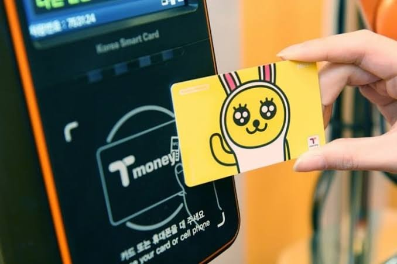

Cities like Seoul and Busan have world-class, clean, and fully English-signposted subway networks. Cars are air-conditioned, feature heated seats in the winter, and provide free, high-speed Wi-Fi. Fares are extremely cheap, starting at just 1,400 KRW (approx. $1.00 USD).
If you want to travel between major cities (like traveling from Seoul to Busan in just 2.5 hours), the KTX (Korea Train eXpress) is the best choice. It is highly recommended to book your tickets in advance on the official KORAIL website to guarantee a seat, especially during weekends and holidays.
Kakao T is the Korean equivalent of Uber and works flawlessly with international cards. Note: Google Maps does NOT support pedestrian navigation in Korea due to security laws. You MUST download **Naver Maps** or **KakaoMap** to navigate walking routes!
The T-money card is a rechargeable transit card that is absolutely essential for anyone visiting South Korea. It can be used on all subways, public buses, and even in taxis and convenience stores nationwide.

Where to Buy: Available at any convenience store (GS25, CU, 7-Eleven) at airports and metro stations for about 3,000 KRW ($2.20 USD).
How to Recharge: Recharge using **cash only** (Korean Won bills) at automated machines inside any metro station or at convenience stores.
Tapping Protocol: You must tap your card on the sensor when boarding AND when exiting public buses and subways to avoid maximum fare penalty charges.
Practice these basic phrases before you arrive. Click the speaker buttons below to hear the native Korean pronunciation spoken aloud!
| English Meaning | Korean (Hangeul) | Pronunciation | Listen Audio |
|---|---|---|---|
| Hello / Good day | 안녕하세요 | An-nyeong-ha-se-yo | |
| Thank you | 감사합니다 | Gam-sa-ham-ni-da | |
| Excuse me / Over here (used to call waiters) | 저기요 | Jeo-gi-yo | |
| How much is it? | 얼마예요? | Eol-ma-ye-yo? | |
| Where is the bathroom? | 화장실이 어디예요? | Hwa-jang-sil-i eo-di-ye-yo? | |
| Please give me water | 물 좀 주세요 | Mul jom ju-se-yo | |
| It is delicious! | 맛있어요 | Mas-iss-eo-yo | |
| Goodbye (to someone staying behind) | 안녕히 계세요 | An-nyeong-hi gye-se-yo |